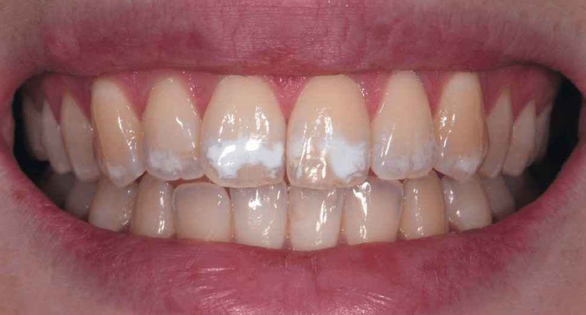
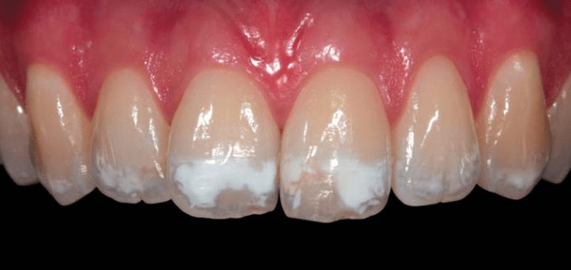
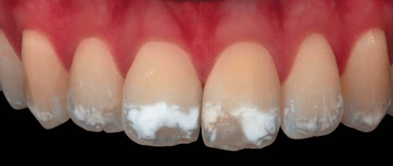

Видалення білих плям і відновлення об'єму
Будь-який процес відновлення зовнішнього вигляду усмішки передбачає здійснення доступної, відтворюваної і мінімально інвазивної процедури, яка гарантує прогнозований і задовільний результат. Методика, застосована в цьому клінічному випадку, поєднувала кілька підходів, що дозволяють звести інвазивність до мінімально можливого рівня.
Клінічна картина
Білі плями — досить серйозна проблема, тому що в багатьох випадках вони являють собою поєднання естетичної вади і порушення анатомічної цілісності, через що істотно збільшується час, потрібний для застосування занадто інвазивних методик реставрації.
У випадку, розглянутому в цій статті, ми бачимо порушення естетики усмішки через наявність великої кількості плям на емалі, які займають більшу частину вестибулярної поверхні зубів. Особливо це помітно на зубах 11 і 21, природний колір яких прихований опаковим шаром демінералізованих зон. Тому тут велика спокуса вдатися до інвазивної техніки, такої як фіксація адгезивних керамічних вінірів.
Точний аналіз клінічної картини разом з гарними знаннями методів відбілювання, ерозивного препарування з подальшою інфільтрацією дозволяють значно поліпшити ситуацію. Композити, призначені для прямих реставрацій, у підсумку будуть використані лише в межах шару поверхневої емалі, який потім буде відполірований.
Пацієнтка попросила усунути білі плями на верхніх фронтальних зубах. Під час клінічного та фотографічного обстеження було виявлено втрату емалі з вестибулярного боку, зумовлену наявністю білих плям. Після ерозійно-інфільтраційної обробки заплановано відновлення тривимірної морфології за допомогою прямої композитної реставрації.



Хід лікування
- Відбілювання для поліпшення кольору в цілому. Через 3 тижні колір зубів поліпшився — можна переходити до ерозійної обробки та інфільтрації.
- Ізоляція зубів 13–23 рабердамом, кламери на зубах 14 і 24. Рабердам уведено в зубо-ясенну борозенку для отримання великої сухої робочої зони та захисту ясен від матеріалів.
- Акуратна піскоструминна обробка ураженої білої ділянки оксидом алюмінію зернистістю 50 мкм. Збоку візуалізується втрата емалі, зумовлена плямами та обробкою.
- DMG Icon Etch (15% соляна кислота) втирається протягом 2 хвилин, після чого змивається; поверхня висушується протягом 30 секунд.
- Уражена поверхня обробляється профілактичною щіткою, встановленою в ендодонтичний реципрокний наконечник; промивання та просушування.
- Нанесення Icon Dry, експозиція 30 секунд. Якщо білі плями все ще видно — процедуру повторюють: у цьому випадку знадобилося 4 повторення до зникнення плям.
- Перед нанесенням інфільтраційної смоли встановлюються матриці для запобігання склеюванню зубів між собою.
- Нанесення інфільтраційної смоли Icon на 3 хвилини, полімеризація протягом 1 хвилини.
- Втрачений об'єм відновлюється композитом для емалі: нанесення за допомогою LM Arte Applica Twist, адаптація — Compobrush.
- Завершальне світлозатверджування з гліцериновим гелем — щоб уникнути утворення шару, інгібованого киснем.
- Фінірування і полірування: набір борів Finishing Style, щітка з козячої вовни та полірувальна паста Diamond Twist.
Результати
Після зняття рабердаму отримано остаточний результат. Через 3 дні зуби регідратовані — збоку видно, що об'єм емалі відновлено. Через 9 місяців після лікування результат стабільний.
Світлини у форматі «до і після» демонструють вельми задовільний естетичний результат. Фото у перехресно-поляризованому світлі переконливо показують зменшення опакових плям.
У друкованій версії статті (журнал «ДентАрт» 2018 №2) клінічний випадок супроводжується повною серією покрокових світлин кожного етапу протоколу.
Висновки
Будь-який процес відновлення зовнішнього вигляду усмішки передбачає здійснення доступної, відтворюваної і мінімально інвазивної процедури, яка гарантує прогнозований і задовільний результат. У цьому випадку можна говорити про застосування загальної методики, в якій поєднуються кілька підходів, щоб інвазивність була на мінімально можливому рівні.
Хочете опанувати техніки прямої художньої реставрації системно?
Онлайн майстер-курс